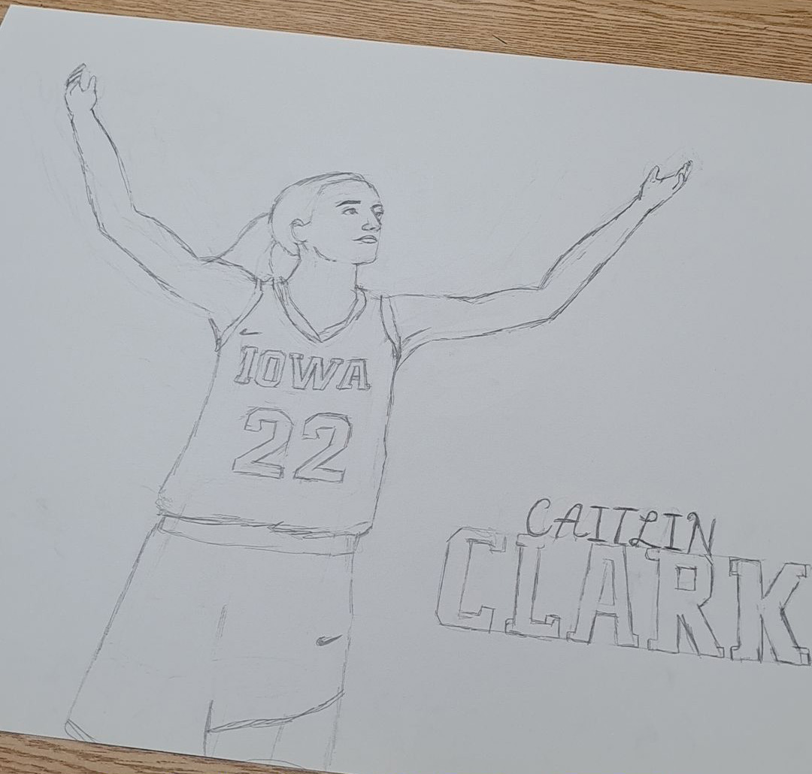
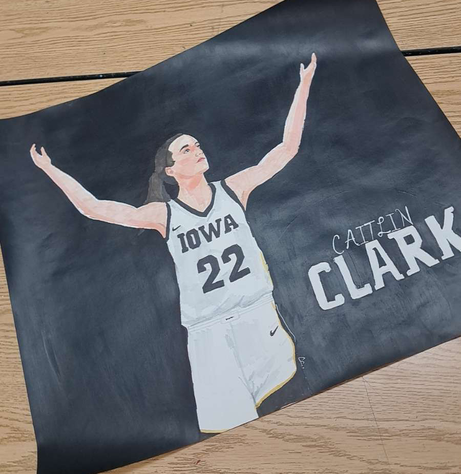
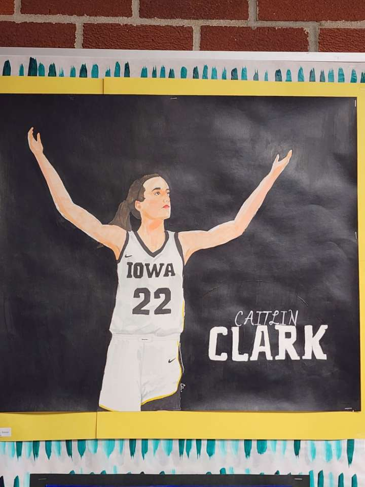

Caitlin Clark
My art journey really began to grow the last couple of months of my senior year. I started to do original projects and develop my artistic style.
At the time, I was inspired by basketball player Caitlin Clark. She played for the Iowa Hawkeyes and was known for her incredible scoring ability and work ethic on the court. I wanted to recreate her celebration after one of many highlight-reel plays.
I started off with a basic pencil sketch. I spent many hours tweaking the sketch until it looked like my reference. I also added her name on the right side of the paper.
I then started to color the sketch in with alcohol markers. I began shading and adding details to make the portrait look more realistic.
Finally, I added a yellow border to outline the drawing and bring the colors together.
I showed this piece at my schools art show and received positive feedback from many staff and students. It then hung outside the art room until I graduated.